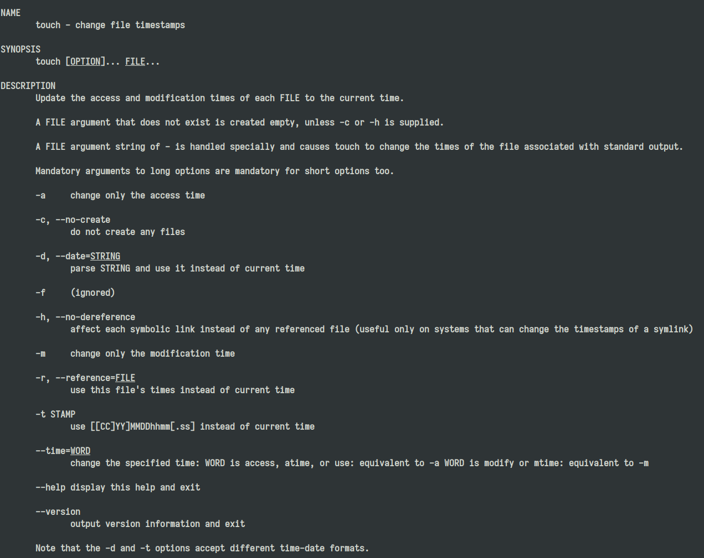

Application Interface
應用程式開發介面(API)定義了與其他軟體系統通訊時必須遵循的規則。開發人員公開或建立 API，以便其他應用程式能夠以程式設計方式與其應用程式通訊。例如，時間表應用程式公開一個 API，要求提供員工的全名和日期範圍。收到此資訊後，它會在內部處理員工的時間表，並傳回該日期範圍內的工作時數。
其重點在於「介面」，意義是兩個事物之間如何互動的。舉一個現實世界中的例子，ATM的介面：一個螢幕和幾個按鈕，允許客戶與他們的銀行互動並請求服務，例如取出現金。同樣，API 是一個軟體與另一個程式互動以獲得所需服務的方式。
API 主要目的是讓應用程式開發人員得以呼叫一組常式功能，而無須考慮其底層的原始碼為何、或理解其內部工作機制的細節。API本身是抽象的，它僅定義了一個介面，而不涉及應用程式在實作過程中的具體操作。
各種各樣的 API
由於 API 的本質是「對外暴露能力的協約」，但具體形式會依照系統層級與通訊方式不同而有所差異。常見可分為幾個類別
- 程式語言 API
- 作業系統 API
- RESTful API
語言級別的 API
函式庫會公開一組函式、類別或模組，讓其他程式呼叫。呼叫者只需要遵守函式簽名（function signature）與輸入輸出規則，不需要了解內部實作。
std::vector<int> v;
v.push_back(114514);
push_back 就是一個 API，表現為一種函式或方法
作業系統 API
作業系統提供系統呼叫（system call）讓程式存取系統資源，例如：
- 檔案
- 記憶體
- 網路
- 行程
由作業系統提供 API，最終會轉換成 kernel system call。可以表現成函式庫的形式：
int fd = open("file.txt", O_RDONLY);
read(fd, buffer, BUF_SIZE);
同樣的，也可以使用 shell 進行 system call：
touch filename
這個指令其實就是在呼叫 touch 程式暴露的介面。
RESTful API
Web API 是目前最常見的一種 API。
API 透過 HTTP 協定暴露 endpoint，其他程式可以透過網路請求呼叫。
GET /users/42
收到
{
"id": 42,
"name": "Alice"
}
透過 HTTP/HTTPS，基於網際網路協定(Protocol)而非程式語言。
在未來的章節，會詳細說明 RESTFul API 的概念，這是本門課程的核心。
API 的形式
為什麼 API 的重點是「介面」呢？前面的例子中，使用了 touch 作為範例，考慮一下 touch 主要的功能：將每個文件的存取時間和修改時間更新為目前時間。

touch [OPTION]... FILE...
如果嘗試把 touch 做成 C 語言的函式：
int touch(
const char *path,
int change_atime,
int change_mtime,
int no_create,
const struct timespec *time,
const char *reference_file
);
| 參數 | 對應 OPTION | 說明 |
|---|---|---|
| path | FILE | 目標檔案 |
| change_atime | -a |
只更新 access time |
| change_mtime | -m |
只更新 modification time |
| no_create | -c |
不建立檔案 |
| time | -d / -t |
指定時間 |
| reference_file | -r |
參考另一個檔案的時間 |
// touch file.txt
touch("file.txt", 1, 1, 0, NULL, NULL);
// touch -c file.txt
touch("file.txt", 1, 1, 1, NULL, NULL);
// touch -r ref.txt file.txt
touch("file.txt", 1, 1, 0, NULL, "ref.txt");
如果嘗試把 touch 做成 RESTFul API 的形式：
PATCH /files/{path}/timestamps
{
"access_time": "2026-01-01T10:00:00Z",
"modification_time": "2026-01-01T10:00:00Z",
"create_if_missing": true,
"reference_file": null
}
| 欄位 | 對應 OPTION | 說明 |
|---|---|---|
| access_time | -a |
access time |
| modification_time | -m |
modification time |
| create_if_missing | -c |
是否建立檔案 |
| reference_file | -r |
參考檔案 |
| 行為 | CLI | C API | REST API |
|---|---|---|---|
| 更新時間 | touch file |
touch(path) |
PATCH /files/{path}/timestamps |
| 不建立檔案 | touch -c file |
no_create=1 |
"create_if_missing": false |
| 指定時間 | touch -t |
timespec |
"modification_time" |
| 參考檔案 | touch -r |
reference_file |
"reference_file" |